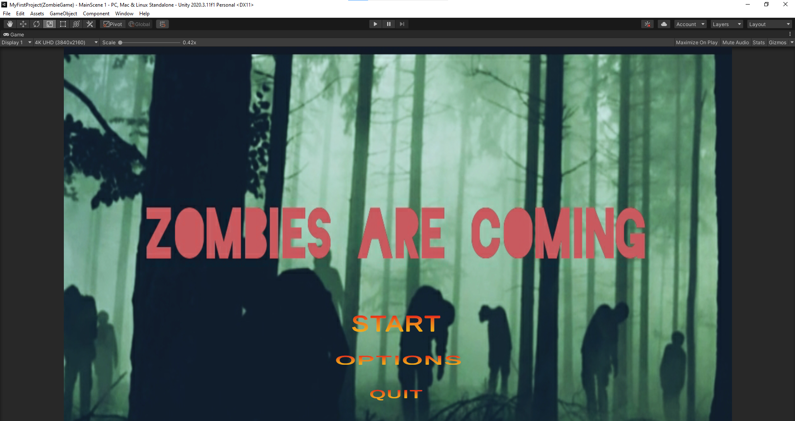
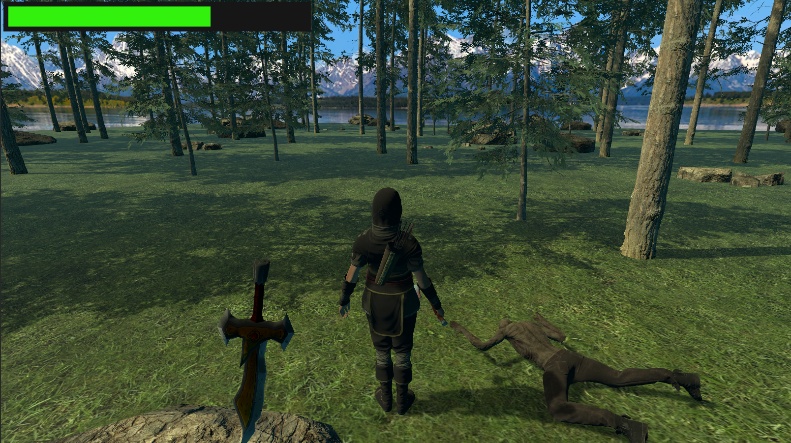

Websites
As a versatile web developer and designer, I create visually appealing, user-friendly websites that meet business needs. With a strong foundation in design principles and programming languages, I develop functional, responsive, and custom websites, as well as manage and maintain existing ones.
Videogames
I've expanded my knowledge in video game development through studies at the South-Eastern Finland University of Applied Sciences. During my time there, I honed various skills crucial for game development, including programming, game design, storytelling, graphic design, sound design, project management, and marketing.
This immersive experience provided a deep understanding of the industry and practical application of skills in collaborative game development projects. Eager to continue evolving in video game development, I look forward to creating innovative gaming experiences.
 Let me share a peek into my personal RPG game project! I assumed various roles, tackling tasks such as programming complex game mechanics, managing the export of game objects, designing a user-friendly main menu, and testing with a keen eye on lighting and scenario creation. These efforts were crucial in crafting a polished and professional gaming experience.
Beyond my core skills
In addition to my experience in graphic design and game development, I have also worked with databases, specifically MySQL. I am knowledgeable in retrieving data from multiple tables, inserting, updating, and deleting data, summarizing data, and writing complex queries. To further expand my knowledge in the field of artificial intelligence, I have been learning Python. I have completed several small projects, including automation with Python, machine learning with Python, and building a website with Django. I am excited to continue learning new programs and techniques to broaden my skills and stay current with industry trends.